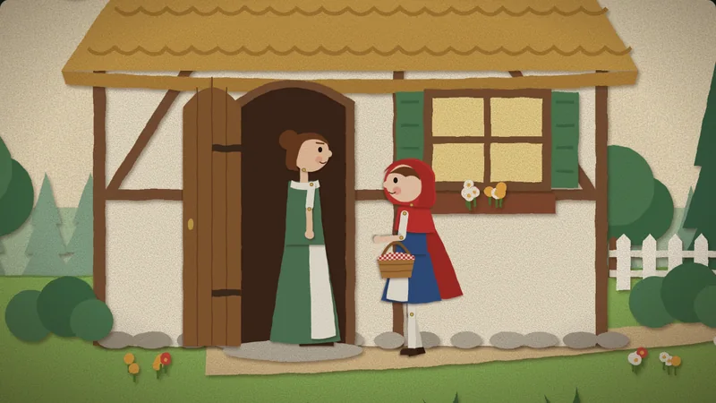
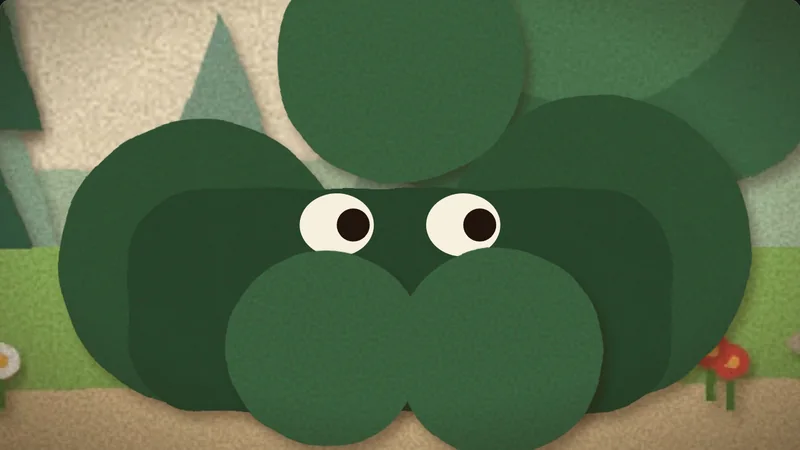
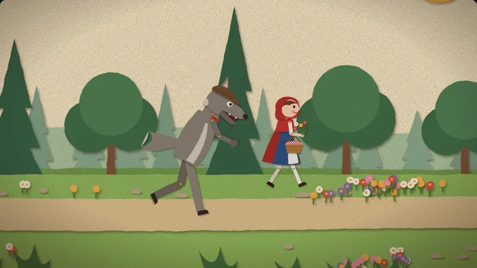
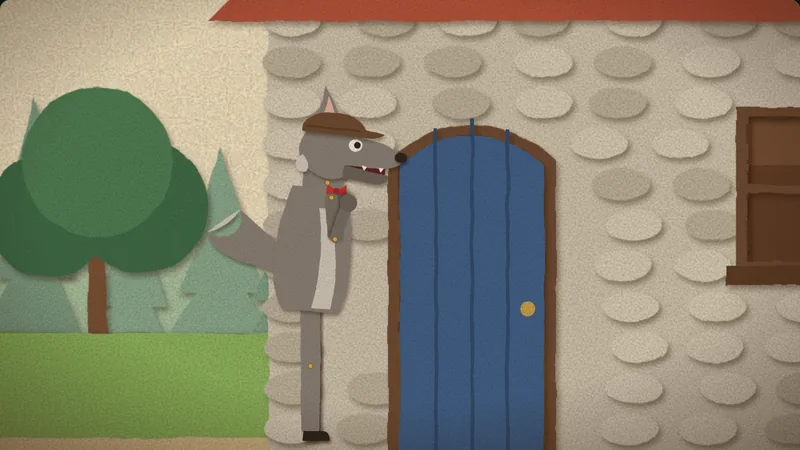
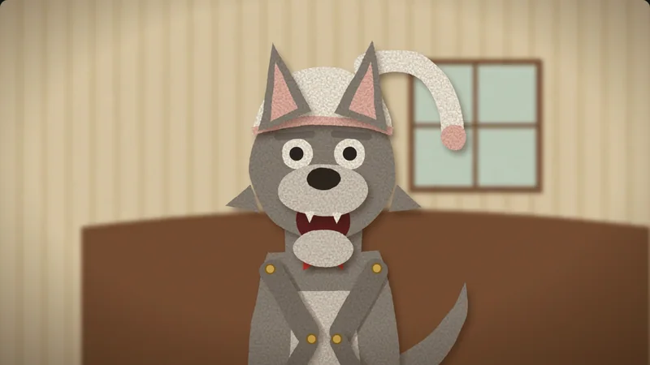
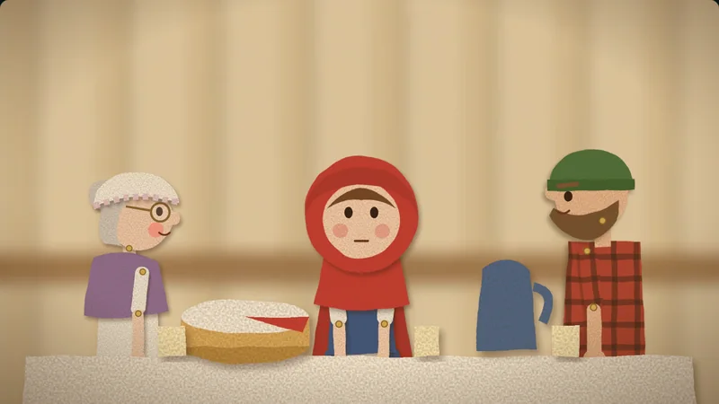
What we set out to do
The Three Little Pigs showed that an image model can paint a lovely world, but every new action needed a new round of drawings, and the characters had to be fought into consistency. This time we asked the opposite question: what if the characters stay simple shapes drawn in code, and we lean into that, so that they look like paper puppets on purpose?
The story is the Brothers Grimm version (1857), retold lightly: the wolf still talks his way into Grandma's house, but Grandma hides in the wardrobe, nobody gets eaten, and the wolf leaves through the window in Grandma's nightcap.
Making it look like stop motion
- Twelve frames a second, on twos. Every movement is sampled into steps, so it moves in little jumps, the way a hand-moved puppet does.
- The animator's hand. Each frame nudges every puppet by a tiny random amount, and the picture flickers slightly. The nudge belongs to the frame, so a paused or rewound film looks exactly the same.
- Paper you can feel. Each piece has paper grain, torn edges and a soft shadow, and the joints show brass pins.
- Replacement, not morphing. Mouths are swapped like stop-motion mouths, blinks are two closed-eye frames, and a door opens through a few boards of different widths.
The cast
Five puppets: Little Red Riding Hood, her mother, the wolf (flat cap, red bow tie, more polite than he should be), Grandma (nightcap, glasses, umbrella) and the woodcutter (check shirt, axe). Each puppet is a handful of paper pieces pinned at the joints. A pose is just a set of joint angles, so a new action, like ducking, swinging an axe or diving through a window, costs a few numbers instead of new drawings.
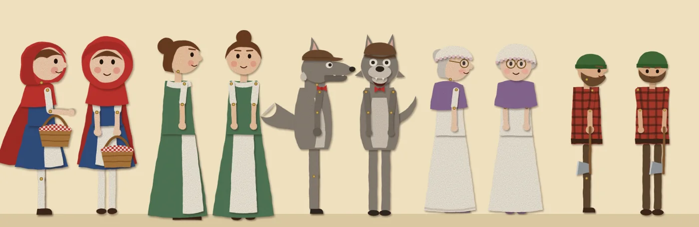
Turning around is a whole-body swap
A paper puppet can't rotate, so a turn works like a cut-out cartoon: the side view squashes, the whole front view takes over for the narrowest frames, and the mirrored side view comes out the other way. Head and body always turn together. A front head on a side body looked wrong every time.
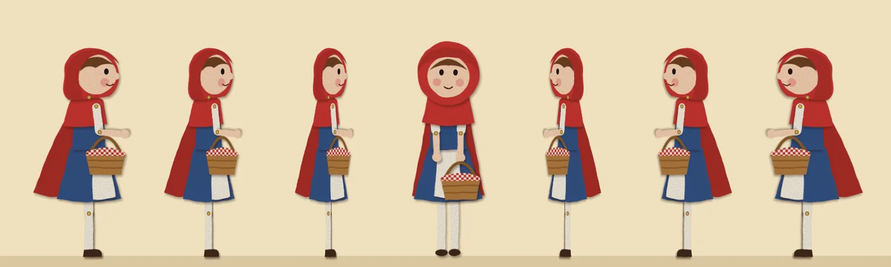
Mouths, walks and hands
Nine mouth shapes, each timed to the words of the voice track. Walks use a compass step: the planted foot stays put while the hip swings over it, so feet never slide on the ground. When someone hands something over, both hands really touch it.
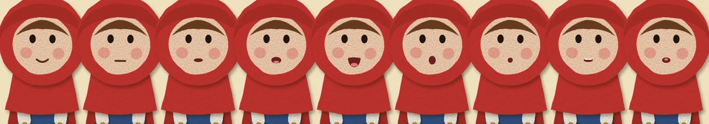
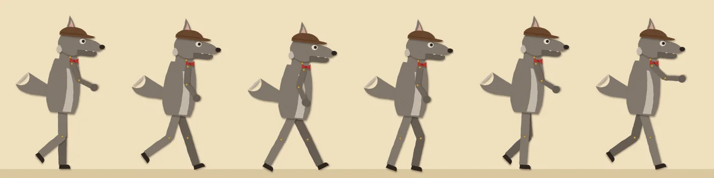
Sets and the camera
Eight sets, each drawn as layers of paper: sky, distant hills, trees, the building, and plants close to the lens. As the camera moves, the layers slide past each other at different speeds, and in close-ups the background goes soft. Windows and doorways are real holes, so we can see people inside a house from outside. Reverse shots get their own sets, so the background behind a face is always what that person is looking at.
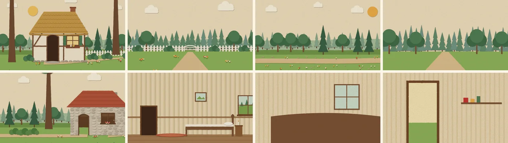
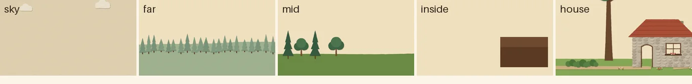
Shots change as in a film: wide shots to show where we are, two-shots for conversations, a close-up for whoever speaks, and each question to "Grandma" closer than the last. At a few scene changes, a big tree trunk sweeps across the frame, as in a paper theatre.
Voices, music and sound
Six voices (the narrator, Little Red Riding Hood, Mother, the wolf, Grandma and the woodcutter) come from free text-to-speech, and every line's word timings drive the mouths. The music is the Three Little Pigs' score, reused. The six sound effects are synthesized in code from noise and tones: knocking, the axe, the wardrobe door, the umbrella on the wolf's head, a thud, and the window breaking.
The rescue that didn't make sense
In the first cut, the woodcutter appeared from nowhere, Grandma suddenly stood outside the wardrobe, and the wolf flew out of the window as if Grandma had superpowers. Every shot looked fine. The story didn't hold together. We rewrote it so that each moment causes the next:
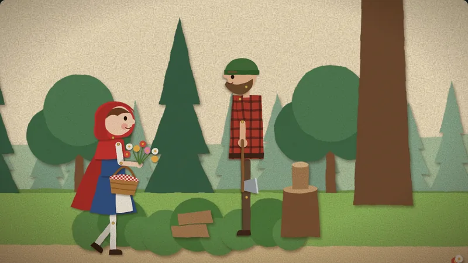
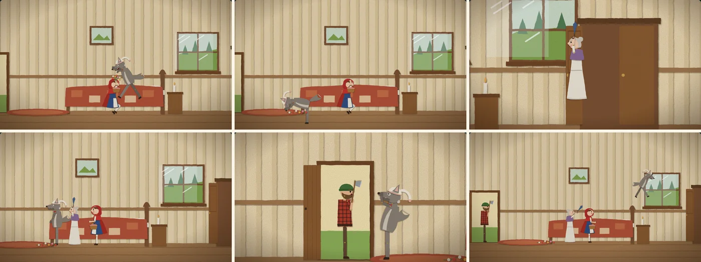
- The wolf leaps; she ducks and cries "Help!"; he snaps up her flowers and lands face first.
- Earlier, while he said "all the better to see you with", we glimpsed Grandma's eye in the crack of the wardrobe door. Now the door bursts open.
- She runs at him and brings her umbrella down on his head.
- He bolts for the front door, where the woodcutter, who heard the cry, steps in.
- Grandma on one side, the woodcutter at the door: only one way out.
- Through the window. Outside, the window stays broken.
The lesson: check the script for cause and effect before animating. A story fix is cheap on paper, and expensive once every shot is built.
Everything we made for it
- Puppets
- Five characters, side and front sets each, with eyes, brows, nine mouths and fingers that stay live while the paper pieces are baked.
- Sets
- Eight layered sets, each with a blurred copy for close-ups.
- Props
- Basket with cake and apple juice, a bouquet that grows as she picks it, Grandma's nightcap and glasses, umbrella, axe and chopping block, quilt, doors that swing, window glass that shatters into falling shards, the spilled flowers.
- Sound
- Six voices, nine mouth shapes per line, four music cues, six synthesized sound effects.
- Tools
- A set drawer and baker; a puppet baker that turns all 154 paper pieces into images so the film starts at once; a sound synthesizer; voice, mouth and audio-joining scripts reused from the pigs; a cast lab for posing puppets; and contact sheets, a few frames of every shot side by side, checked before anyone else watched.
The numbers
Where this leaves us
New actions are cheap. The pigs could only do what had been drawn. Here, the umbrella blow, the duck and the dive through the window were each a few lines, added on the last evening.
Consistency comes free. A puppet is the same paper in every shot, so nothing drifts between scenes.
It gets cheaper with practice. Puppets, sets, sounds and tools carry over to the next story.
The limits are real too. The look is deliberately simple, the paper effect has to be baked ahead of time to play smoothly, and with no painter to hide behind, the story itself has to hold up. We plan to build the Papermorph Skill's picture-book method on this.